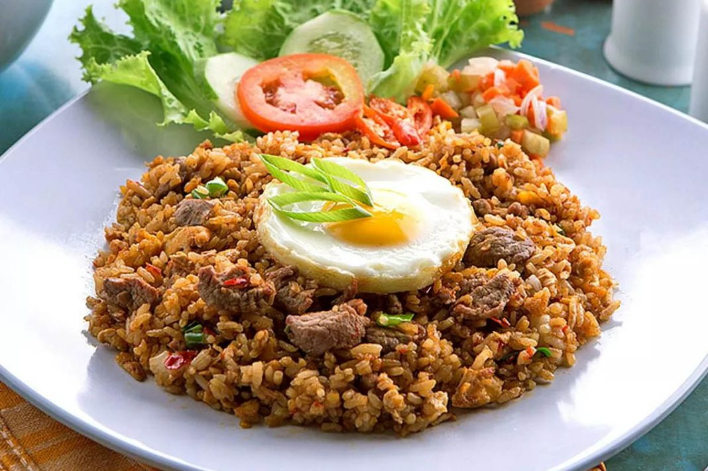

Hobi
Saya suka motoran karena rasanya bebas dan seru saat melaju di jalanan. Angin yang menerpa wajah dan pemandangan yang lewat bikin perjalanan jadi lebih menyenangkan. Selain itu, motoran juga bikin lebih mudah menjelajahi tempat-tempat baru dengan cara yang simpel dan praktis!
Favorite Lesson
Saya suka pelajaran pemrograman karena bisa bikin ide-ide jadi kenyataan lewat kode. Rasanya seru saat berhasil menyelesaikan tantangan dan melihat hasilnya langsung di layar. Selain itu, pemrograman mengasah logika dan kreativitas, bikin saya terus belajar hal baru setiap saat!
Favorite Food

Saya suka nasi goreng karena rasanya selalu bisa diandalkan, entah pagi, siang, atau malam. Setiap piring nasi goreng punya kombinasi bumbu yang gurih, dengan tambahan telur, ayam, atau kerupuk yang bikin makin lengkap. Simpel, tapi selalu bikin kenyang dan puas!